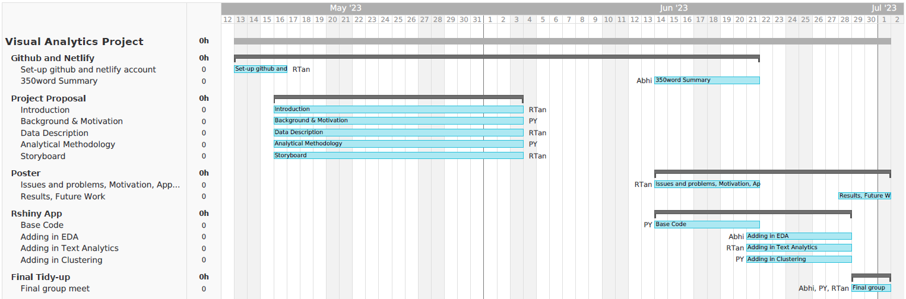

Project Proposal
1. Introduction
Fish and other seafood provides nutrients for more than three billion people globally and is an income source for 10%-12% of the world’s population (The Nature Conservancy, 2021). Food and Agriculture Organization of the United Nations (FAO) reports that Illegal, Unreported, and Unregulated (IUU) fishing represents up to 26 million tonnes of fish caught annually (FAO, 2023). IUU remains one of the greatest global threats as it results in overfishing, which threatens marine biodiversity, livelihoods, aggravates poverty, and increases food insecurity (IMO, 2019). Given the global impact that IUU causes, there has been international efforts to account for IUU fishing and a call-to-action to fight IUU. As part of the efforts, Agreement on Port State Measures (PSMA) was instituted in Jun 2016, which is the first binding international agreement specifically designed to prevent, deter and eliminate IUU fishing by denying port access and use to foreign vessels engaging in or supporting such fishing (FAO, 2023). By 2022, 60% of global port states are committed to PSMA (Responsible Seafood Advocate, 2022). Given the global participation, data points have been made available through Global Information Exchange System (GIES) which can be leveraged on to produce data-driven analysis for trend indicators of IUU and gaps identified to tighten IUU measures. Currently, there exists a IUU Fishing Index that provides a measure of the degree to which states are exposed to and effectively combat IUU fishing. The score map allows for oversight on the state-of-health for each region (IUU Fishing Index, 2023).

2. Background & Motivation
This project is motivated by the pressing need to address illegal fishing and protect marine species affected by it. The extraction of entity names and relationships from online news articles related to fishing, marine industry, and international maritime trade using a natural language processing tool provides valuable information for investigation. However, effectively exploring and understanding the context surrounding each tip is challenging without overwhelming analysts with excessive information. Therefore, the motivation is to develop visual analytics techniques that enable analysts to efficiently identify companies potentially involved in illegal fishing. The proposed solution should prioritize displaying relevant contextual information while concealing irrelevant details, while also promoting dynamic and interactive visualization for improved investigative capabilities. By providing a powerful visual tool, this project aims to empower analysts in escalating their investigations and effectively combating illegal fishing practices.
3. Data Description
The dataset has:
27,622 nodes
24,038 edges
7,794 connected components
The dataset given is an undirected multi-graph.
3.1 Nodes Attributes
| Column Name | Data Type | Description |
|---|---|---|
| type | character | Type of node that is a company or person. |
| country | character | Country associated with the entity. This can be a full country or a two-letter country code. |
| product_services | character | Description of product services that the “id” node does. |
| revenue_omu | integer | Operating revenue of the “id” node in Oceanus Monetary Units. |
| id | character | Identifier of the node is also the name of the entry. |
| role | character | The subset of the “type” node, includes beneficial owner or company contacts |
3.2 Edges Attributes
| Column Name | Data Type | Description |
|---|---|---|
| type | character | Type of edge that is a person. |
| source | character | ID of the source node. |
| target | character | ID of the target node. |
| role | character | The subset of the “type” edge, includes beneficial owner or company contacts |
4. Analytical Methodology
4.1 Packages to be used
| Package | Usage |
|---|---|
| jsonlite | To import nodes and edges data from json format files |
| tidygraph | Allow users to manipulate and analyze network graphs using a tidy data framework. |
| ggraph | Provides various options for creating aesthetically pleasing and informative network visualizations |
| visNetwork | Enabling the creation of interactive network graphs, provides features like zooming, panning, and tooltips for enhanced exploration of the graph |
| graphlayouts | Provides various layout algorithms for arranging nodes and edges in a network graph, offers different algorithms such as Fruchterman-Reingold, Kamada-Kawai, and more |
| ggforce | Extends the functionality of ggplot2 and provides additional geoms, scales, and utilities for creating advanced and customized network visualizations |
| tidytext | Used for text mining and analysis, allows users to work with text data associated with network nodes or edges |
| tidyverse | Provides a cohesive and consistent set of tools for data manipulation, visualization, and analysis, which can be utilized in the process of constructing network graphs |
4.2 Exploratory Data Analysis (EDA)
EDA is a crucial step in understanding the dataset by utilizing data visualization techniques. It serves to identify any issues or anomalies within the data and uncover valuable insights about the relationships between variables and underlying patterns present in the dataset. By employing a combination of univariate, bivariate, and multivariate visualizations, as well as summary statistics, a comprehensive understanding of the dataset can be gained.
EDA also plays a significant role in examining the distribution of existing entities within the dataset. By analyzing the type and country data, it becomes possible to discern and comprehend the distinct patterns exhibited by suspicious entities compared to those categorized as non-suspicious.
Through EDA, the team hope to uncover potential data quality issues, detect outliers, identify missing values, and verify the consistency of the dataset. Furthermore, it enables the exploration of correlations, trends, and dependencies between variables, shedding light on hidden insights that might inform further analysis or investigative efforts.
By conducting a thorough EDA, the team can gain a holistic understanding of the dataset, discover meaningful patterns, and generate valuable knowledge that aids decision-making and subsequent analysis tasks.
4.3 Network Graph
Network graphs, along with centrality measures, provide a powerful tool for identifying potential illegal fishing activities. By constructing a network graph based on relationships and interactions among entities involved in fishing and maritime trade, we can analyze the centrality measures of these entities. Centrality measures, such as degree centrality, betweenness centrality, and eigenvector centrality, allow us to assess the relative importance and influence of each entity within the network. In the context of illegal fishing, entities with high centrality scores may indicate key players or hubs that are potentially involved in illegal activities. By focusing on these influential entities and their connections, we can uncover hidden patterns, detect suspicious relationships, and identify clusters of entities that exhibit abnormal behavior. Network graph analysis, combined with centrality measures, provides a valuable approach to pinpoint potential illegal fishing activities and target further investigation and intervention efforts effectively.
4.4 Clustering Analysis
By leveraging the available data, specifically the source, target, type of business, country, product description, and value of goods, we can employ clustering analysis on the network graph to identify anomalies that could indicate a company’s involvement in illegal, unreported, and unregulated (IUU) fishing activities.
Clustering algorithms can be applied to group entities based on their connections and relationships in the network graph. By examining the patterns and groupings that emerge, we can identify clusters of entities that exhibit unusual behavior or deviate from the typical characteristics of legitimate fishing operations. These anomalies may manifest as suspicious trade relationships, atypical product descriptions, unexpected transaction values, or unusual combinations of countries and business types.
The clustering analysis enables us to uncover hidden patterns and structures within the data, allowing us to identify entities that demonstrate suspicious or potentially illegal fishing practices. By pinpointing these anomalies, we can prioritize our investigation efforts and allocate resources effectively to combat IUU fishing. This approach provides a data-driven means of detecting and monitoring potential IUU activities, helping to protect marine ecosystems and enforce regulations in the fishing industry.
5. Storyboard
5.1 Uncovering the Anomalies
With EDA, we will be able to have a good overview of the various categories of data, as well and spot any anomaly data through visualizations.
As our dataset is mainly categorical data, our initial data visualizations will be mainly using barcharts and heatmaps.

As an additional analysis, we may use mosaic plots to visualize relationships between multiple categorical variables, which can help reveal associations ro dependencies among the variables and help spot unusal patterns or outliers.

5.2 Grouping Commonalities & Uncovering Patterns
Next, we will use network graphs to visualize common groups.
Network analysis will be conducted using the following methods:
- Community detection through the visualization layout of the network graph.
- Node similarity measures using jaccard or cosine similarity to identify companies with common attributes or similar connectivity patterns.
- Centrality measures: to use the appropriate centrality measures to identify companies that are highly connected or influential in the network - which would point out potential IUU hubs.

5.3 Evaluation
Grouped together with the various analysis of outlier detection and community detection, the conclusion will identify entities that exhibit suspicious behavior or are disconnected from the rest of the network.
The team will evaluate the evidence presented by the network graph, incorporating external supporting literature reviews to assess the overall credibility and significance of the findings.
6. Project Timeline & Task Allocation
To ensure the project tasks are fulfilled the following timeline and task allocation will be adopted.
